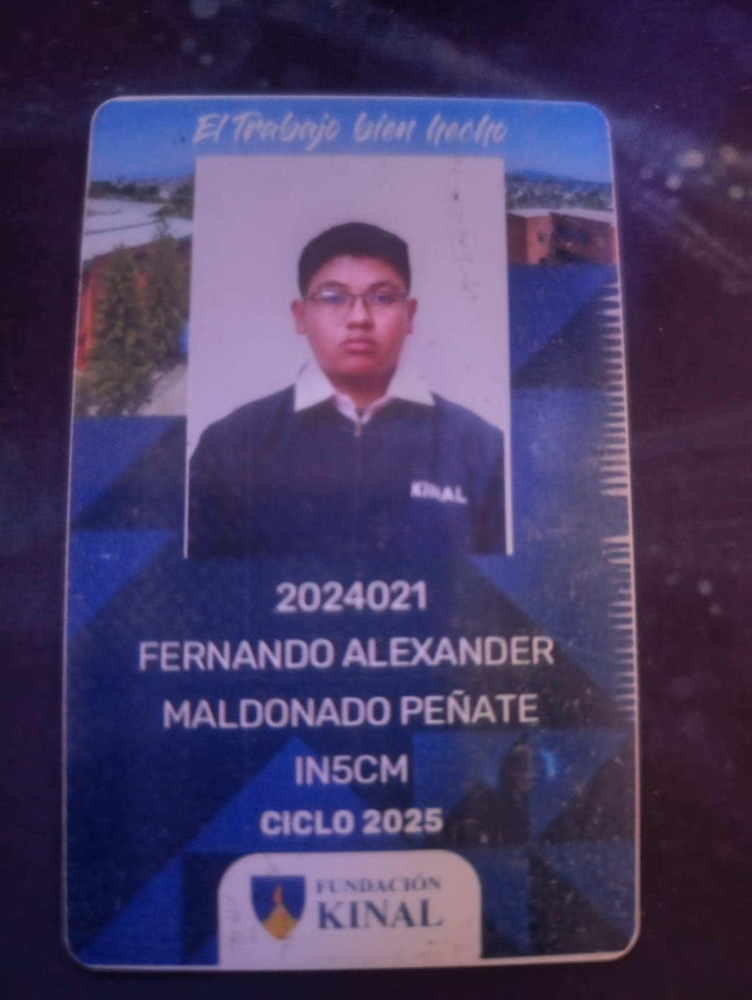

Sobre mis estudios, me considero una persona que aprende a un ritmo más lento que otros, no porque sea un mal estudiante, sino porque necesito comprender los temas con calma para asimilarlos de forma clara y correcta. Esta manera de aprender me permite no solo entender mejor los contenidos, sino también explicarlos con seguridad cuando es necesario. Aunque en ocasiones termino mis trabajos un poco más tarde, siempre los realizo con detalle, dedicación y responsabilidad, procurando entregarlos de la mejor manera posible. Durante este año, uno de mis principales objetivos es graduarme con buenas notas, ya que deseo enorgullecer a mi mamá, quien ha sido un apoyo fundamental y lo ha dado todo por mí durante estos últimos tres años. Mi motivación principal es terminar bien mis estudios con éxito, obtener un buen reconocimiento académico y técnico, y demostrar que el esfuerzo y la paciencia siempre dan resultados. Para cumplir con mis responsabilidades con tareas, organizo mis trabajos mediante una agenda donde anoto todas las tareas y pendientes. Esto me permite organizar mi tiempo de manera adecuada, trabajar con anticipación y evitar tareas retrazadas con puntos bajos. Gracias a esta organización, logro entregar las tareas completas, bien hechas y conforme a las instrucciones dadas, manteniéndome al día con mis obligaciones y estar sin preocupaciones como estudiante. .

Este año aunque sea corto en cuestión de tiempo, ya que solo son 6-7 meses, planeo dedicarme a hacer los trabajos de la mejor manera posible, bien detallados y concisos. Dedicarle el tiempo requerido, si es toda la noche está bien, pero también pensar en mi salud y vida social, aunque si toca hay que hacerlo, por algo será. Así que planeo dedicarme lo mayor posible, organizar mejor mis tiempos, ser responsable con cada entrega y no dejar nada para después, para no preocuparme más adelante y terminar cada bimestre excelente, aprendiendo lo necesario y dando lo mejor de mí en cada proyecto.
Yo soy una Persona que podria considerarme buena, he hecho cosas malas, y aveces me arrepiento de no haber hecho ciertas cosas, pero soy una persona que mira al frente y sigue adelante ya qeu no hay de otra, hoy por hoy mi meta a corto plazo es gradurme y entrar a la universidad y ahi ya veremos que pasara n un futuro tan incierto, pero esto nunca lo dejo de agradecer al Dios todo poderoso que cada dia me da fuerzas para levantarme.